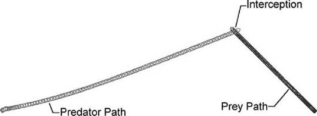

|
|
< Day Day Up > |
|
2.5 InterceptingThe line-of-sight chase algorithm we discussed in the previous section in the context of continuous movement is effective in that the predator always will head directly toward the prey. The drawback to this algorithm is that heading directly toward the prey is not always the shortest path in terms of range to target or, perhaps, time to target. Further, the line-of-sight algorithm usually ends up with the predator following directly behind the prey unless the predator is faster, in which case it will overshoot the prey. A more desirable solution in many cases듡or example, a missile being shot at an aircraft들s to have the predator intercept the prey at some point along the prey's trajectory. This allows the predator to take a path that is potentially shorter in terms of range or time. Further, such an algorithm could potentially allow slower predators to intercept faster prey. To explain how the intercept algorithm works, we'll use as a basis the physics-based game scenario we described earlier. In fact, all that's required to transform the basic- chase algorithm into an intercept algorithm is the addition of a few lines of code within the chase function. Before getting to the code, though, we want to explain how the intercept algorithm works in principle. (You can apply the same algorithm, building on the line-of-sight example we discussed earlier, in tile-based games too.) The basic idea of the intercept algorithm is to be able to predict some future position of the prey and to move toward that position so as to reach it at the same time as the prey. This is illustrated in Figure 2-10. Figure 2-10. InterceptionAt first glance it might appear that the predicted interception point is simply the point along the trajectory of the prey that is closest to the location of the predator. This is the shortest-distance-to-the-line problem, whereby the shortest distance from a point to the line is along a line segment that is perpendicular to the line. This is not necessarily the interception point because the shortest-distance problem does not consider the relative velocities between the predator and the prey. It might be that the predator will reach the shortest-distance point on the prey's trajectory before the prey arrives. In this case the predator will have to stop and wait for the prey to arrive if it is to be intercepted. This obviously won't work if the predator is a projectile being fired at a moving target such as an aircraft. If the scenario is a role-playing game, as soon as the player sees that the predator is in his path, he'll simply turn away. To find the point where the predator and prey will meet at the same time, you must consider their relative velocities. So, instead of just knowing the prey's current position, the predator also must know the prey's current velocity듮hat is, its speed and heading. This information will be used to predict where the prey will be at some time in the future. Then, that predicted position will become the target toward which the predator will head to make the interception. The predator must then continuously monitor the prey's position and velocity, along with its own, and update the predicted interception point accordingly. This facilitates the predator changing course to adapt to any evasive maneuvers the prey might make. This, of course, assumes that the predator has some sort of steering capability. At this point you should be asking how far ahead in time you should try to predict the prey's position. The answer is that it depends on the relative positions and velocities of both the predator and the prey. Let's consider the calculations involved one step at a time. The first thing the predator must do is to calculate the relative velocity between itself and the prey. This is called the closing velocity and is simply the vector difference between the prey's velocity and the predator's: Here the relative, or closing, velocity vector is denoted Vr. The second step involves calculating the range to close. That's the relative distance between the predator and the prey, which is equal to the vector difference between the prey's current position and the predator's current position: Here the relative distance, or range, between the predator and prey is denoted Sr. Now there's enough information to facilitate calculating the time to close. The time to close is the average time it will take to travel a distance equal to the range to close while traveling at a speed equal to the closing speed, which is the magnitude of the closing velocity, or the relative velocity between the predator and prey. The time to close is calculated as follows: The time to close, tc, is equal to the magnitude of the range vector, Sr, divided by the magnitude of the closing velocity vector, Vr. Now, knowing the time to close, you can predict where the prey will be tc in the future. The current position of the prey is Sprey and it is traveling at Vprey. Because speed multiplied by time yields average distance traveled, you can calculate how far the prey will travel over a time interval tc traveling at Vprey and add it to the current position to yield the predicted position, as follows: Here, St is the predicted position of the prey tc in the future. It's this predicted position, St, that now becomes the target, or aim, point for the predator. To make the interception, the predator should head toward this point in much the same way as it headed toward the prey using the line-of-sight chase algorithm. In fact, all you need to do is to add a few lines of code to Example 2-8, the line-of-sight chase function, to convert it to an intercepting function. Example 2-9 shows the new function. Example 2-9. Intercept function
void DoIntercept(void)
{
Vector u, v;
Bool left = false;
Bool right = false;
Vector Vr, Sr, St; // added this line
Double tc // added this line
// added these lines:
Vr = Prey.vVelocity - Predator.vVelocity;
Sr = Prey.vPosition - Predator.vPosition;
tc = Sr.Magnitude() / Vr.Magnitude();
St = Prey.vPosition + (Prey.vVelocity * tc);
// changed this line to use St instead of Prey.vPosition:
u = VRotate2D(-Predator.fOrientation,
(St - Predator.vPosition));
// The remainder of this function is identical to the line-of-
// sight chase function:
u.Normalize();
if (u.x < -_TOL)
left = true;
else if (u.x > _TOL)
right = true;
Predator.SetThrusters(left, right);
}
The code in Example 2-9 is commented to highlight where we made changes to adapt the line-of-sight chase function shown in Example 2-8 to an intercept function. As you can see, we added a few lines of code to calculate the closing velocity, range, time to close, and predicted position of the prey, as discussed earlier. We also modified the line of code that calculates the target point in the predator's local coordinates to use the predicted position of the prey rather than its current position. That's all there is to it. This function should be called every time through the game loop or physics engine loop so that the predator constantly updates the predicted interception point and its own trajectory. The results of this algorithm as incorporated into example AIDemo2-2 are illustrated in Figures 2-11 through 2-14. Figure 2-11. Intercept scenario 1들nitial trajectoriesFigure 2-12. Intercept scenario 1들nterceptionFigure 2-13. Intercept scenario 2듞orrective actionFigure 2-14. Intercept scenario 2들nterceptionFigure 2-11 illustrates a scenario in which the predator and prey start out from the lower left and right corners of the window, respectively. The prey moves at constant velocity from the lower right to the upper left of the window. At the same time the predator calculates the predicted interception point and heads toward it, continuously updating the predicted interception point and its heading accordingly. The predicted interception point is illustrated in this figure as the streak of dots ahead of the prey. Initially, the interception point varies as the predator turns toward the prey; however, things settle down and the interception point becomes fixed because the prey is moving at constant velocity. After a moment the predator intercepts the prey, as shown in Figure 2-12. Notice the difference between the path taken by the predator using the intercept algorithm versus that shown in Figure 2-9 using the line-of-sight algorithm. Clearly, this approach yields a shorter path and actually allows the predator and prey to cross the same point in space at the same time. In the line-of-sight algorithm, the predator chases the prey in a roundabout manner, ending up behind it. If the predator was not fast enough to keep up, it would never hit the prey and might get left behind. Figure 2-13 shows how robust the algorithm is when the prey makes some evasive maneuvers. Here you can see that the initial predicted intercept point, as illustrated by the trail of dots ahead of the prey, is identical to that shown in Figure 2-11. However, after the prey makes an evasive move to the right, the predicted intercept point is immediately updated and the predator takes corrective action so as to head toward the new intercept point. Figure 2-14 shows the resulting interception. The interception algorithm we discussed here is quite robust in that it allows the predator to continuously update its trajectory to effect an interception. After experimenting with the demo, you'll see that an interception is made almost all the time. Sometimes interceptions are not possible, however, and you should modify the algorithm we discussed here to deal with these cases. For example, if the predator is slower than the prey and if the predator somehow ends up behind the prey, it will be impossible for the predator to make an interception. It will never be able to catch up to the prey or get ahead of it to intercept it, unless the prey makes a maneuver so that the predator is no longer behind it. Even then, depending on the proximity, the prey still might not have enough speed to effect an interception. In another example, if the predator somehow gets ahead of the prey and is moving at the same speed or faster than the prey, it will predict an interception point ahead of both the prey and the predator such that neither will reach the interception point듮he interception point will constantly move away from both of them. In this case, the best thing to do is to detect when the predator is ahead of the prey and have the predator loop around or take some other action so as to get a better angle on the prey. You can detect whether the prey is behind the predator by checking the position of the prey relative to the predator in the predator's local coordinate system in a manner similar to that shown in Examples 2-8 and 2-9. Instead of checking the x-coordinate, you check the y-coordinate, and if it is negative, the prey is behind the predator and the preditor needs to turn around. An easy way to make the predator turn around is to have it go back to the line-of-sight algorithm instead of the intercept algorithm. This will make the predator turn right around and head back directly toward the prey, at which point the intercept algorithm can kick back in to effect an interception. Earlier we told you that chasing and evading involves two, potentially three, distinct problems: deciding to chase or evade, actually effecting the chase or evasion, and obstacle avoidance. In this chapter we discussed the second problem of effecting the chase or evasion from a few different perspectives. These included basic chasing, line-of-sight chasing, and intercepting in both tiled and continuous environments. The methods we examined here are effective and give an illusion of intelligence. However, you can greatly enhance the illusions by combining these methods with other algorithms that can deal with the other parts of the problem듩amely, deciding when and if to chase or evade, and avoiding obstacles while in pursuit or on the run. We'll explore several such algorithms in upcoming chapters. Also, note that other algorithms are available for you to use to effect chasing or evading. One such method is based on the use of potential functions, which we discuss in Chapter 5. |
|
|
< Day Day Up > |
|